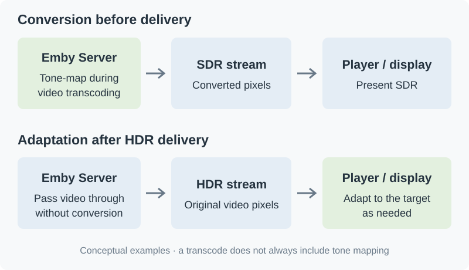

Where Tone Mapping Happens in an Emby Playback Session
Tone mapping can occur during server transcoding or later in the player and display path, depending on the playback session.
Two sessions can show the same HDR library file yet perform brightness adaptation in different places. Follow the delivered video before attributing the displayed result to a server setting.

Conceptual routes. A particular app's supported signal and processing path determines which route it can use.
Session A: the server prepares SDR
The server decodes the HDR picture, interprets its light and color representation, and performs HDR-to-SDR conversion. It encodes the resulting picture with matching SDR descriptions. The app receives that SDR rendition and presents it through an SDR output path.
The mapping has occurred before delivery. The library source remains HDR, while the delivered video describes the processed SDR image. Source metadata and final stream metadata consequently answer different questions.
Session B: unchanged HDR reaches a local renderer
With Direct Play, the server supplies the original file. Direct Stream can change packaging or other tracks while retaining the coded video. A supported app then decodes and interprets the delivered picture.
If its presentation adapts HDR to the selected output, the pixel change occurs after delivery. The Windows app FAQ describes GPU-shader tone mapping during presentation, including a path with software decoding. Decoding location and mapping location can therefore differ.
Session C: the display fits an HDR signal
An HDR signal reaches an HDR display whose useful range is smaller than the source request. The display can perform HDR-to-HDR adaptation. Its HDR indicator identifies the signal mode, while its internal mapping determines the reproduced light.
Other device or operating-system stages can participate in the output chain. The relevant evidence is the actual signal and processing at each boundary rather than the library's HDR badge alone.
Record a comparison by boundary
| Boundary | Useful observation |
|---|---|
| File to server | Exact source release, HDR format and color fields |
| Server to app | Video copied or re-encoded; delivered HDR/SDR representation |
| App to output | Decoder, renderer, selected presentation mode |
| Output to screen | Received signal mode and display processing |
Video transcoding can be required for reasons other than tone mapping, so it should be inspected for the actual picture processing. Likewise, copied video locates any later pixel adaptation downstream. This boundary record makes two Emby sessions comparable: it identifies which stage could have changed the image and which conversion inputs belonged to that stage.